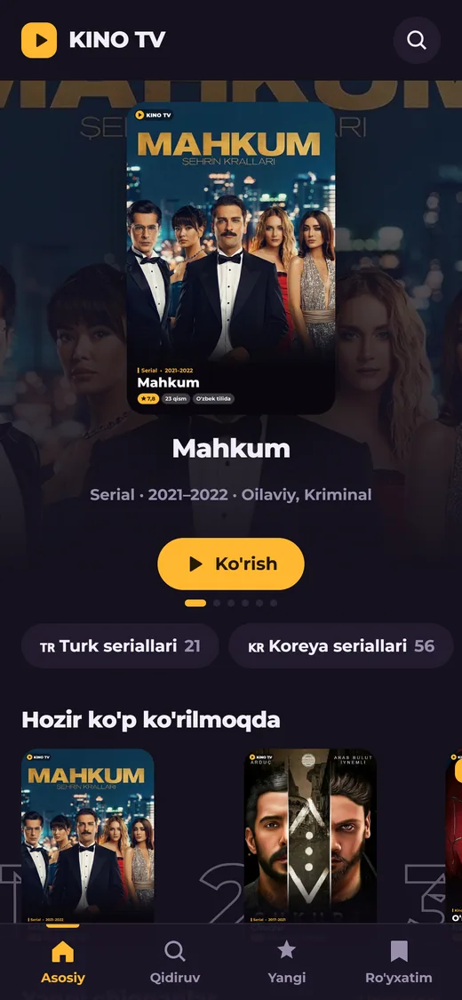
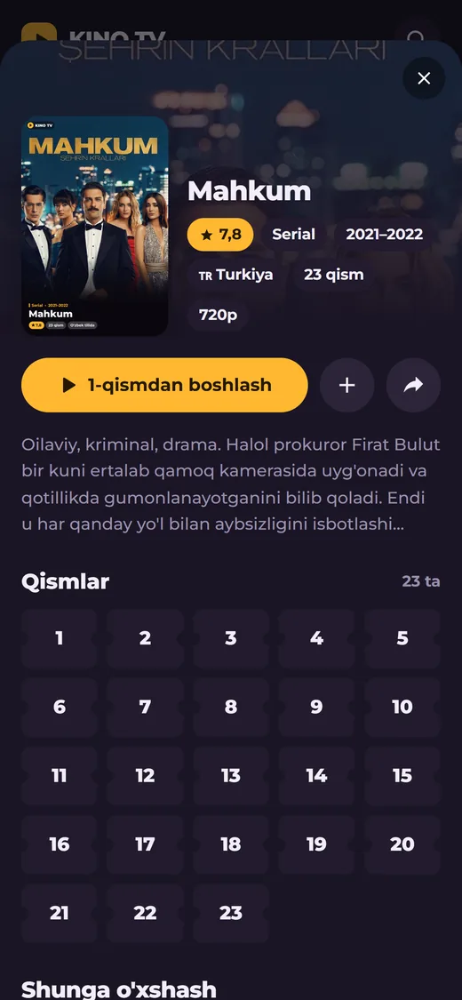
KINO TV
Seriallar va kinolar uchun bot va mini app. Bo‘limlar, qidiruv, qismlar ro‘yxati; qaysi qismda to‘xtaganingizni eslab qoladi va keyingisidan davom ettiradi.
@linvkino_botHamkor CRM muallifiman. To‘rtta filialning alohida 1C bazalarini bitta tizimga birlashtirdim: savdo, nasiya, kassa va ombor endi bir joyda va internet uzilsa ham ishlaydi.
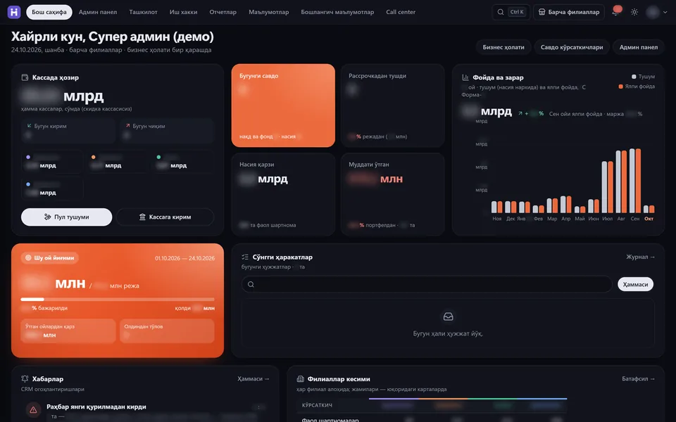
1C o‘rnini bosgan muddatli to‘lov savdo tizimi. Sentabr 2026 dan ishlab chiqyapman, platforma meniki.
To‘rtta do‘kon to‘rtta alohida 1C bazasida ishlardi va bir-birini ko‘rmasdi. Bir do‘konda qora ro‘yxatga tushgan mijoz keyingisida yana nasiyaga tovar olishi mumkin edi.
Hammasi uchun bitta tizim qurdim: savdo, nasiya shartnomalari, to‘lovlar, kassa, ombor, ish haqi va hisobotlar. 1C bilan ikki tomonlama sinxronlanadi, shuning uchun o‘tish davrida ikkalasi yonma-yon ishladi.
Bir oyda 1 373 ta o‘zgarish, 230 dan ortiq ekran, 65 ta hisobot. Shu platformani sizning savdongizga ham moslab beraman.
hamkorcrm.uz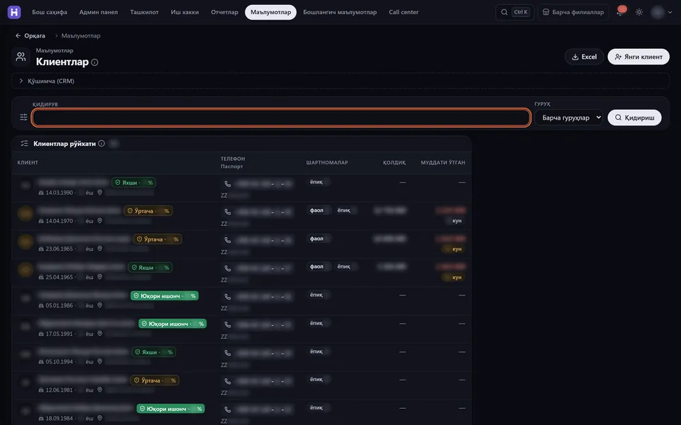
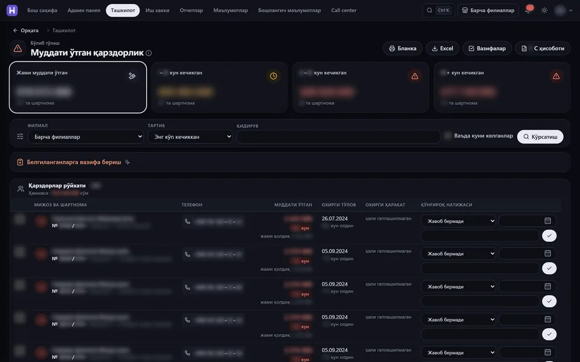
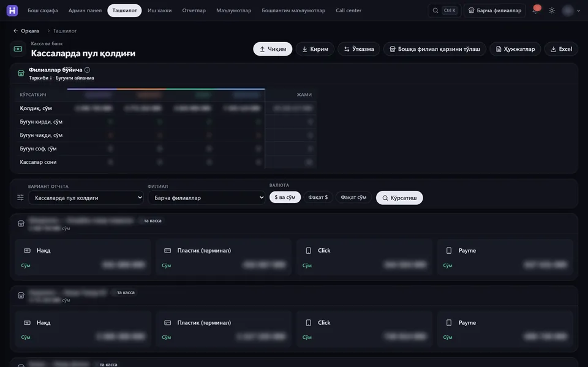
Android va iPhone uchun bitta koddan yozaman (Flutter): bitta ilova ikkala do‘konga chiqadi.
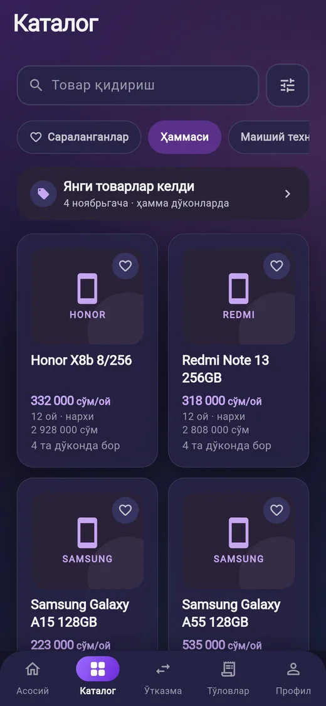
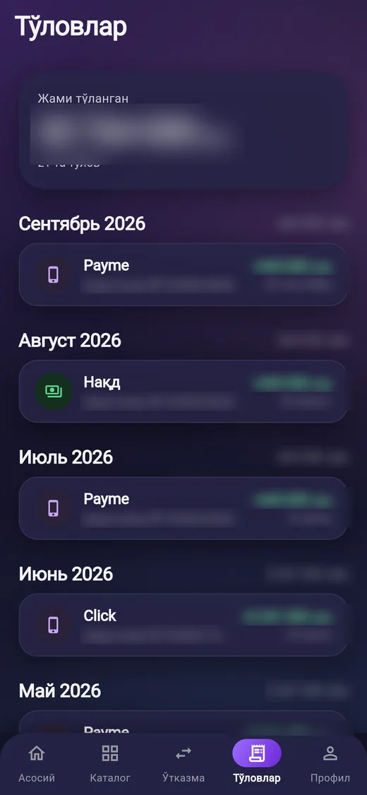
Muddatli to‘lov bilan xarid qilgan mijoz uchun: shartnomalar, qolgan qarz, keyingi to‘lov va to‘lov tarixi telefonda. Katalogdan muddatli to‘lovga buyurtma beradi, do‘kon bilan chatda yozishadi.
Mijoz alohida ilova o‘rnatmaydi: katalog, qidiruv va ro‘yxat Telegram ichida ochiladi.


Seriallar va kinolar uchun bot va mini app. Bo‘limlar, qidiruv, qismlar ro‘yxati; qaysi qismda to‘xtaganingizni eslab qoladi va keyingisidan davom ettiradi.
@linvkino_bot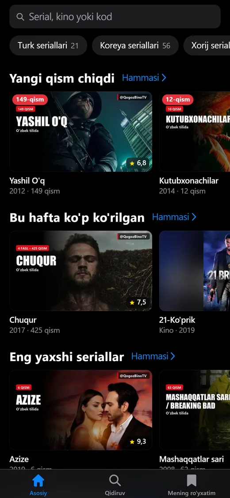
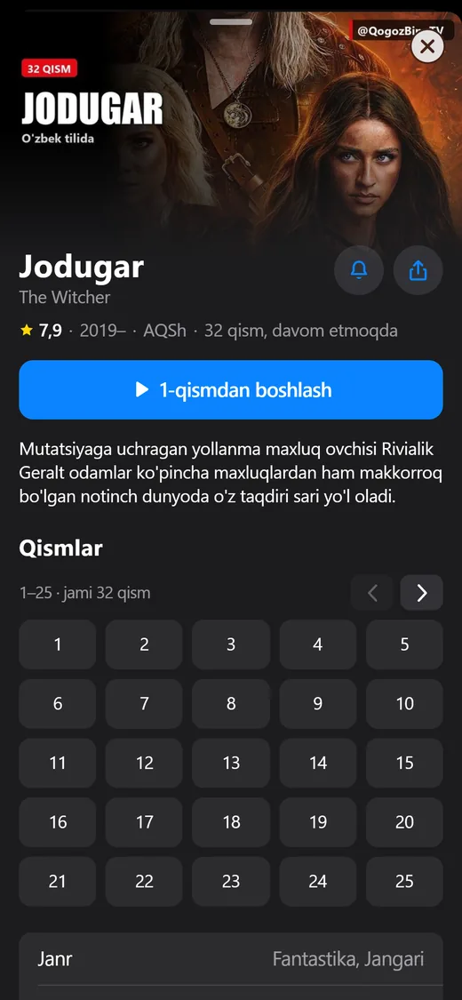
Telegram kanal uchun mini app: yangi chiqqan qismlar, haftaning eng ko‘p ko‘rilganlari, qidiruv va «Mening ro‘yxatim».
qogoz-bino.pages.devHar biri o‘z brendi uchun noldan chizilgan, shablonsiz.
To‘rt filialli savdo tarmog‘i sayti: katalog, filiallar va muddatli to‘lovga ariza.
hamkorsavdo.uzParranda brendi uchun sayt: mahsulotlar, ulgurji buyurtma, Veo bilan yaratilgan jonli video. Uch tilda.
Saytni ochishKichik sanoat zonasi sayti: do‘konlar, to‘lov hisoblagichi, investorlar va rezidentlar uchun bo‘limlar.
Saytni ochishKichik gidroelektrostansiyalar sayti: loyihalar, qanday ishlashi, xizmatlar va ariza.
Saytni ochishSayt yonida kerak bo‘ladigan narsalar ham: jonli video, motion roliklar, buklet.
Shuxrat o‘g‘li sayti uchun. Remotion’da esa matn va raqamli motion roliklar yig‘aman.
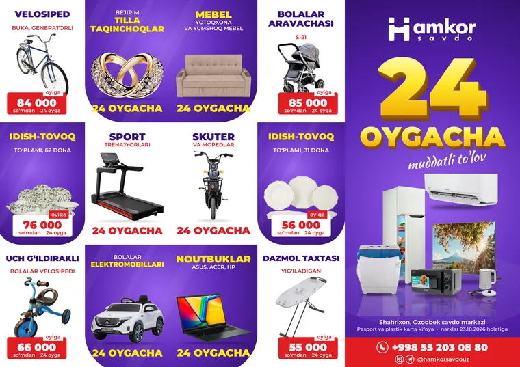
A4, uch buklama, bosmaga tayyor vektor fayl. Tashqi tomoni.
CRM’dan mobil ilovagacha: biznesga kerak dasturning hammasini o‘zim yozaman.
1C o‘rniga yoki yonida ishlaydigan tizim: shartnoma, to‘lov grafigi, kassa, ombor, hisobotlar. Internet bo‘lmasa ham ishlaydi.
Katalog, buyurtma, ariza va mijoz bilan aloqa Telegram ichida. Mijoz hech narsa o‘rnatmaydi.
Android va iPhone uchun bitta koddan: mijoz ilovasi, xodimlar ilovasi, oflayn ishlaydigan ilova.
Brend sayti, katalog, ariza shakllari. Telefonda tez ochiladi, bir necha tilda.
1C, Telegram, Excel va PDF bilan bog‘lash: hisobotlar, narx kuzatuvi, takrorlanadigan qo‘l ishini dasturga topshirish.
Veo va Remotion bilan reklama roliklari, flayer va yevrobuklet.
Qisqacha yozing: biznesingiz nima bilan shug‘ullanadi va nimani tezlashtirmoqchisiz. O‘zim javob beraman.